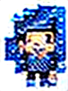
玩家見習士（男） ⚠️ 重製（1分）
年輕的見習士候選人，身著銀藍色學院制服，手持全息數據板，展現探索未知的求知氣息。藍白配色象徵科技與純淨。
主腦QA：實際為黑白配色且無學院制服與數據板，主體與設計理念完全不符。
🛠 SD 1.5（dreamshaper-8）｜風格 pipoya_character｜96x128｜seed 1000
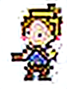
玩家見習士（女） ⚠️ 重製（1分）
女見習士穿著鑲金邊的學院服，束著高馬尾，手持水晶杖，散發堅毅而溫和的初學者光芒。藍金配色顯出潛力與領袖氣質。
主腦QA：持槍而非水晶杖，無馬尾與鑲金邊制服，不符合女見習士設計。
🛠 SD 1.5（dreamshaper-8）｜風格 pipoya_character｜96x128｜seed 1001
Isabel（溫柔引導） ⚠️ 重製（1分）
溫柔的引導者，粉白長袍與飄逸長髮，手捧淡金光球，象徵溫暖與指引。柔和色調營造安心感。
主腦QA：黑白服裝與手提包，無長袍與光球，無法辨識為溫柔引導者。
🛠 SD 1.5（dreamshaper-8）｜風格 pipoya_character｜96x128｜seed 1002
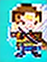
Dada（務實） ⚠️ 重製（1分）
務實的守護者，褐色夾克與工具腰帶，手檢全息設計圖，展現踏實的工程師風格。大地色系強調可靠。
主腦QA：黃衫藍褲持劍，與褐色夾克工程師形象完全不符。
🛠 SD 1.5（dreamshaper-8）｜風格 pipoya_character｜96x128｜seed 1003
Kael（嚴格正式） ⚠️ 重製（2分）
嚴肅正式的黑衣軍官，肩章星徽與冷峻眼神，透露不可逾越的紀律。暗色金屬質感帶出權威。
主腦QA：雖有黑衣元素，但無肩章星徽等軍官特徵，不符合嚴格軍官設計。
🛠 SD 1.5（dreamshaper-8）｜風格 pipoya_character｜96x128｜seed 1004
Sara（理性分析） ⚠️ 重製（1分）
理性分析家，銀色緊身衣外罩實驗袍，眼鏡與腕部電腦顯示邏輯至上。銀灰主調搭配冷藍光。
主腦QA：呈現棋盤格圖案而非理性分析家，主體錯誤。
🛠 SD 1.5（dreamshaper-8）｜風格 pipoya_character｜96x128｜seed 1005
Rova（自由比喻） ⚠️ 重製（1分）
自由奔放的比喻藝術家，彩色流動長裙印有星雲圖案，手持畫筆法杖，色彩奔放象徵創造力。
主腦QA：黑白裙子且無畫筆法杖，與彩色長裙藝術家設計不符。
🛠 SD 1.5（dreamshaper-8）｜風格 pipoya_character｜96x128｜seed 1006
Moon（深沉哲學） ⚠️ 重製（1分）
深沉哲人，深藍長袍綴星座刺繡，兜帽遮頭，懷抱古書卷，氛圍神秘靜謐。群青色與銀星點綴。
主腦QA：持黃傘且無長袍與書卷，無法對應深沉哲人形象。
🛠 SD 1.5（dreamshaper-8）｜風格 pipoya_character｜96x128｜seed 1007
Aura（詩意感性） ⚠️ 重製（1分）
詩意感性的守護者，白紫漸層禮服，周圍飄浮光點，長髮如銀河傾瀉，夢幻空靈。
主腦QA：黑白裙子且無光點與銀河長髮，不符合詩意感性的夢幻設計。
🛠 SD 1.5（dreamshaper-8）｜風格 pipoya_character｜96x128｜seed 1008
Liyang（活力教練） ⚠️ 重製（2分）
活力教練，橙白輕甲與運動頭帶，握拳蓄能，傳遞行動與能量。暖色系展現熱血與激勵。
主腦QA：紅色跑步服裝非橙白輕甲，無頭帶與握拳蓄能，活力元素雖在但整體不符。
🛠 SD 1.5（dreamshaper-8）｜風格 pipoya_character｜96x128｜seed 1009
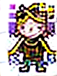
Council（博學總結） ⚠️ 重製（1分）
博學的議會智者，高大紫金長袍，周身環繞全息卷軸，多臂或光屏展示多元知識。紫金配色彰顯智慧與威嚴。
主腦QA：黑黃服色與無卷軸多臂，與紫金長袍智者完全不符。
🛠 SD 1.5（dreamshaper-8）｜風格 pipoya_character｜96x128｜seed 1010
遺忘魔 ⚠️ 重製（1分）
象徵災難性遺忘的怪物，形似半溶解的書頁怪，每當玩家學習新技能時會侵蝕舊記憶。擊敗它可獲得記憶穩定道具。
主腦QA：呈現為骷髏而非半溶解書頁怪，主體錯誤。
🛠 SD 1.5（dreamshaper-8）｜風格 pipoya_monster｜96x128｜seed 1011
過擬合怪 ⚠️ 重製（1分）
外表像過度裝飾的數據雕塑，身上貼滿訓練標籤但忽略真實規律。攻擊時會複製玩家的招式但不理解弱點。
主腦QA：頭形戴帽物體而非數據雕塑，無法對應過擬合怪設計。
🛠 SD 1.5（dreamshaper-8）｜風格 pipoya_monster｜96x128｜seed 1012
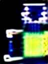
梯度幽靈 ⚠️ 重製（1分）
梯度消失的化身，半透明、幾乎隱形的霧狀幽靈，在暗處行動能讓玩家技能失效。需要高學習率道具方能偵測。
主腦QA：形似瓶子而非半透明霧狀幽靈，主體錯誤。
🛠 SD 1.5（dreamshaper-8）｜風格 pipoya_monster｜96x128｜seed 1013
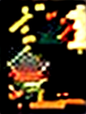
爆炸元素怪 ⚠️ 重製（1分）
梯度爆炸的具象，不穩定且隨時可能爆發的元素生物，體表不斷閃爍高能色彩。過量攻擊會觸發自爆連鎖。
主腦QA：普通人形而非不穩定元素生物，完全不符。
🛠 SD 1.5（dreamshaper-8）｜風格 pipoya_monster｜96x128｜seed 1014
震盪史萊姆 ⚠️ 重製（1分）
學習率震盪的生物，形似彈性膠質，不停在兩個位置間來回跳動且難以擊中。擊倒後掉落學習調整藥水。
主腦QA：呈現為鳥而非彈性膠質史萊姆，主體錯誤。
🛠 SD 1.5（dreamshaper-8）｜風格 pipoya_monster｜96x128｜seed 1015
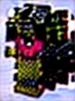
偏見巨像 ⚠️ 重製（1分）
訓練資料偏差形成的巨石像，只暴露於部分特徵而忽略整體。攻擊選擇性極強，脆弱的反面屬性可致勝。
主腦QA：女性角色而非巨石像，主體錯誤。
🛠 SD 1.5（dreamshaper-8）｜風格 pipoya_monster｜96x128｜seed 1016
記憶結晶 ⚠️ 重製（1分）
散發柔和藍光的晶體，使用後可暫時穩固知識記憶，防止遺忘。所有冒險者背包常備之物。
主腦QA：人形而非藍色晶體，主體錯誤。
🛠 SD 1.5（dreamshaper-8）｜風格 icon_item｜64x64｜seed 1017
專注沙漏 ⚠️ 重製（1分）
將注意力凝聚於沙漏之中，使用後一小時內專注力倍增，技能冷卻時間減半。
主腦QA：人物圖像而非沙漏，主體錯誤。
🛠 SD 1.5（dreamshaper-8）｜風格 icon_item｜64x64｜seed 1018
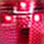
梯度藥水 ⚠️ 重製（1分）
灌入梯度流能量的玻璃瓶，喝完能重新活化神經連結，讓技能升級變得容易。
主腦QA：棋盤格圖案而非玻璃藥水瓶，主體錯誤。
🛠 SD 1.5（dreamshaper-8）｜風格 icon_item｜64x64｜seed 1019
泛化之書 ⚠️ 重製（1分）
記載泛化理論的魔法書，閱讀後能暫時降低過擬合風險，使玩家技能可以對抗未知敵人。
主腦QA：人物站立而非魔法書，主體錯誤。
🛠 SD 1.5（dreamshaper-8）｜風格 icon_item｜64x64｜seed 1020
加速晶片 ⚠️ 重製（1分）
鑲嵌於裝備的微型晶片，注入學習動量，提升整體訓練效率。工程師的最愛。
主腦QA：人物圖像而非微型晶片，主體錯誤。
🛠 SD 1.5（dreamshaper-8）｜風格 icon_item｜64x64｜seed 1021
平衡天秤 ⚠️ 重製（1分）
校正資料偏差的魔法天秤，使用後平衡訓練集，消除偏見巨像的影響。
主腦QA：類似美人魚角色而非魔法天秤，主體錯誤。
🛠 SD 1.5（dreamshaper-8）｜風格 icon_item｜64x64｜seed 1022
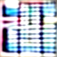
認知護盾 ⚠️ 重製（1分）
結合記憶鞏固術式的護盾，佩戴期間免疫遺忘魔的攻擊，保持知識清晰。
主腦QA：人物圖像而非護盾，主體錯誤。
🛠 SD 1.5（dreamshaper-8）｜風格 icon_item｜64x64｜seed 1023
靈感火花 ⚠️ 重製（1分）
封存突破性靈感的火花石，使用後可跳脫局部最優，發現新的解決路徑。
主腦QA：人物圖像而非火花石，主體錯誤。
🛠 SD 1.5（dreamshaper-8）｜風格 icon_item｜64x64｜seed 1024
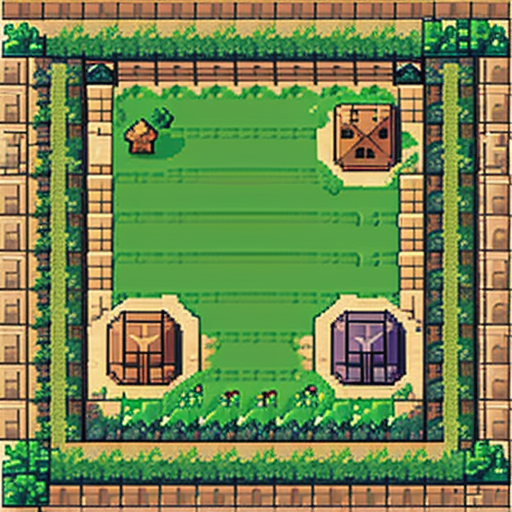
入門草原 ✅ 主腦QA通過（3分）
新手初始草原，遍布簡單標記的訓練石與輕柔微風。適合熟悉基本操作。
主腦QA：田野場景基本符合草原設定，雖缺少訓練石但可辨識為入門草原。
🛠 SD 1.5（dreamshaper-8）｜風格 rpg_tile_topdown｜512x512｜seed 1025
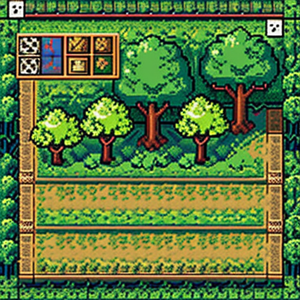
資料森林 ✅ 主腦QA通過（4分）
資訊密集的迷宮森林，樹木枝葉皆記錄著資料流向，小徑充滿預處理挑戰。
主腦QA：森林與路徑明顯呈現，符合資料森林場景設計。
🛠 SD 1.5（dreamshaper-8）｜風格 rpg_tile_topdown｜512x512｜seed 1026
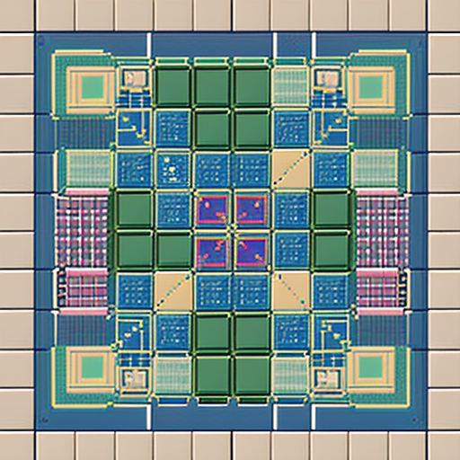
神經網路星城 ⚠️ 重製（1分）
高維度城市，建築物模仿神經元結構，傳送門連結不同層級，是訓練與推理的主場。
主腦QA：抽象方塊非高維度城市，主體完全錯誤。
🛠 SD 1.5（dreamshaper-8）｜風格 rpg_tile_topdown｜512x512｜seed 1027
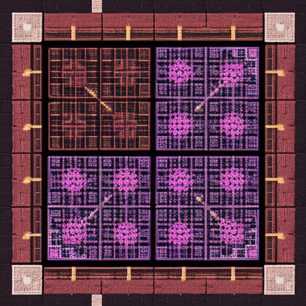
數據深淵 ⚠️ 重製（1分）
充滿高維度雜訊的深淵，環境不斷變形，僅有強韌模型才能抵達底層的終極考驗場。
主腦QA：人物角色而非深淵場景，主體完全錯誤。
🛠 SD 1.5（dreamshaper-8）｜風格 rpg_tile_topdown｜512x512｜seed 1028